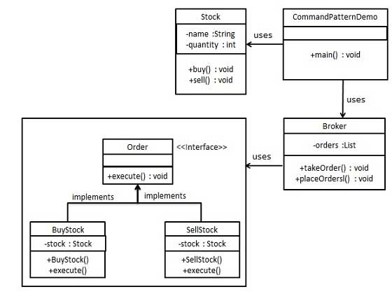

Command pattern is a data driven design pattern and falls under behavioral pattern category. A request is wrapped under an object as command and passed to invoker object. Invoker object looks for the appropriate object which can handle this command and passes the command to the corresponding object which executes the command.
We have created an interface Order which is acting as a command. We have created a Stock class which acts as a request. We have concrete command classes BuyStock and SellStock implementing Order interface which will do actual command processing. A class Broker is created which acts as an invoker object. It can take and place orders.
Broker object uses command pattern to identify which object will execute which command based on the type of command. CommandPatternDemo, our demo class, will use Broker class to demonstrate command pattern.
